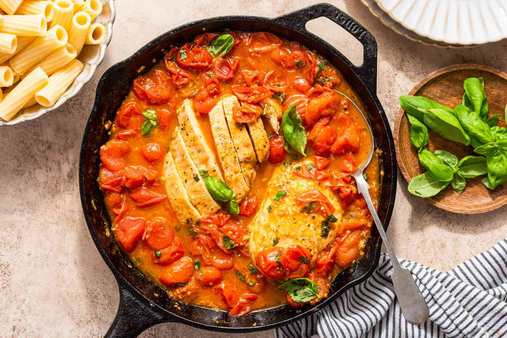

Chicken Pomodoro

Description
Are you looking to make a quick meal that will leave you truly satisfied yet begging for more? Well then
look no further Oliver Twist because we're making a Chicken Pomodoro tonight! This flavourful dish will have
your mouth watering from it's robust tomato sauce and succulent chicken. Gather up your ingredients, skillet, and
apron because we're going to be eating good in 30 minutes!
Ingredients:
Chicken
- 1 pound boneless chicken breast
- 1 teaspoon salt
- 1 teaspoon Italian dressing
- 2 tablespoons olive oil, divided
Pomodoro Sauce
- 1 shallot, minced
- 4 cloves garlic, minced
- 1 can crushed tomatoes
- 1/2 teaspoon salt
- 1 teaspoon sugar
- 1/2 teaspoon crushed red pepper flakes
- 1 tablespoon chopped fresh basil
- 1 3/4 cups of chicken broth
- 1/4 cup pinot grigio
- 16 oz of conchiglie pasta
Directions:
- Gather ingredients and heat a deep skillet over medium heat.
- Season chicken with salt, garlic, and Italian seasonings.
- Pour 2 teaspoons oil into skillet, once hot, add chicken and cook until golden.
- Pour remaining oil into skillet. Add minced shallot and cook until soft. Add garlic, stir till fragrant.
- Add crushed tomatoes, salt, sugar, red pepper flakes, and basil. Pour chicken broth and wine, stir to combine.
- Add pasta to skillet. Place chicken on top. Reduce heat to medium-low then cover and cook until pasta is tender.
- Taste and adjust seasonings. Serve and enjoy!
Return to top
Return to menu